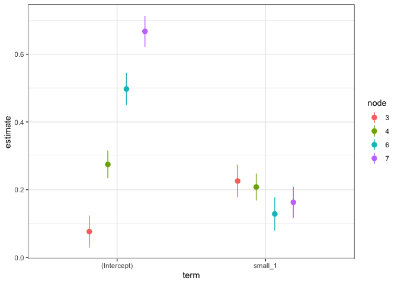

The goal of gardenr is to provide tools for general linear mixed effects model regression (GLMM) trees as implemented in the {glmertree} package.
Installation
You can install the development version of gardenr from GitHub with:
# install.packages("devtools")
devtools::install_github("Chhr1s/gardenr")Example
Here is an example of using cross_validate_it() to help with hyperparameter tuning.
Simulate some data
Here’s a function within the package to simulate some multilevel data. It has defaults, but these can be changed. use ?sim_multilevel() for details.
dat <- sim_multilevel()Split Data & Make CV Object
Wherever possible, I wanted to rely on good functions from the tidymodels framework. We can use rsample to spit the data and make a cross-validation object.
example_split <- rsample::initial_split(dat)
example_train <- rsample::training(example_split)
example_test <- rsample::testing(example_split)
cv <- rsample::vfold_cv(data = example_train, v = 10)Make a Formula object
This is the proposed GLMM tree formula. This is not a normal formula object, but a Formula object instead. See ?Formula::as.Formula for an explanation of the differences.
ex_formula <-
Formula::as.Formula(
'outcome ~ small_1 |
(1 | id_vector) |
small_2 + small_c_1 + small_c_2 + nuisance_1a + nuisance_c_1a'
)Make a Tuning Grid
We can then use dials to make a tuning grid. Notice that the parameter objects for GLMM trees have already been made and are in gardenr (e.g., alpha_par())
tuning_grid <-
dials::grid_max_entropy(
maxdepth_par(maxdepth_min = 2L, maxdepth_max = 20L),
alpha_par(alpha_min = 0.10, alpha_max = 0.001),
trim_par(trim_min = 0.01, trim_max = 0.5),
size = 10
)
tuning_grid
#> # A tibble: 10 × 3
#> maxdepth_par alpha_par trim_par
#> <int> <dbl> <dbl>
#> 1 13 0.0996 0.402
#> 2 19 0.0548 0.0993
#> 3 14 0.00564 0.0229
#> 4 10 0.0447 0.158
#> 5 19 0.00537 0.273
#> 6 11 0.0116 0.453
#> 7 15 0.0476 0.334
#> 8 2 0.0664 0.471
#> 9 12 0.0811 0.0343
#> 10 3 0.0837 0.0433Fit the Model to the Cross-Validated Data
Here we fit the model to the cross-validated object.
fitted <-
cross_validate_it(
cv_obj = cv,
seed = 713,
tuning_grid = tuning_grid,
mod_formula = ex_formula,
cluster = id_vector
)See Best Fitting Hyperparameters
best_fit <-
fitted %>%
dplyr::arrange(mean_rmse)
best_fit
#> # A tibble: 10 × 8
#> cv_index maxdepth_par alpha_par trim_par mean_rmse se_rmse mean_mae se_mae
#> <int> <int> <dbl> <dbl> <dbl> <dbl> <dbl> <dbl>
#> 1 10 3 0.0837 0.0433 0.456 0.00671 0.00277 0.0000489
#> 2 10 3 0.0837 0.0433 0.456 0.00671 0.00277 0.0000489
#> 3 10 3 0.0837 0.0433 0.456 0.00671 0.00277 0.0000489
#> 4 10 3 0.0837 0.0433 0.456 0.00671 0.00277 0.0000489
#> 5 10 3 0.0837 0.0433 0.456 0.00673 0.00277 0.0000489
#> 6 10 3 0.0837 0.0433 0.456 0.00679 0.00277 0.0000499
#> 7 10 3 0.0837 0.0433 0.458 0.00603 0.00279 0.0000451
#> 8 10 3 0.0837 0.0433 0.459 0.00602 0.00279 0.0000449
#> 9 10 3 0.0837 0.0433 0.460 0.00557 0.00280 0.0000440
#> 10 10 3 0.0837 0.0433 0.465 0.00641 0.00283 0.0000446
best_fit_trained <-
lmertree(
data = example_train,
formula =
ex_formula,
maxdepth = best_fit$maxdepth_par[1],
alpha = best_fit$alpha_par[1],
trim = best_fit$trim_par[1],
cluster = id_vector,
verbose = TRUE
)
#> 'log Lik.' -903.9974 (df=6)
#> 'log Lik.' -885.5143 (df=10)
#> 'log Lik.' -885.5143 (df=10)Plot the Parameters in One Space
This can clarify what the difference is
summary(best_fit_trained$tree) %>%
purrr::map_dfr(broom::tidy, .id = 'node') %>%
dplyr::mutate(node = factor(node)) %>%
ggplot(
aes(
x = term,
y = estimate,
color = node,
ymin = estimate - 1.96*std.error,
ymax = estimate + 1.96*std.error
)
) +
geom_pointrange(position = position_dodge(width = 0.5)) +
theme_bw()